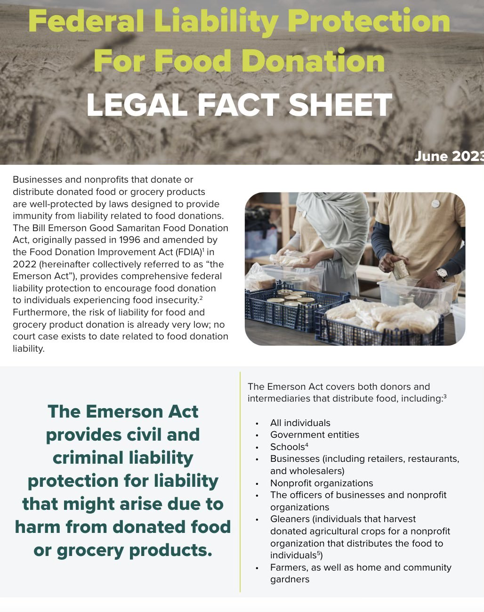

Every student, Every school, Every day!
Successfully diverting 40 to 60% of landfill designated waste by providing containers for liquids, organics, recycling and trash.
WHY IS FOOD RECVOERY IMPORTANT?
Food recovery is essential because it helps reduce environmental impact by preventing food waste from contributing to
landfills and greenhouse gas emissions. It also plays a critical role in addressing hunger by redirecting surplus
food to those in need, supporting vulnerable communities. Economically, food recovery saves money for businesses and households
and increases the efficiency of the food system. Ethically, it is a way to balance the abundance of food in some areas with the
scarcity in others. Overall, food recovery fosters a more sustainable, equitable, and responsible approach to food management.
Know Your Protected
By the Bill Emerson Good Samaritain Food Act

Our Mission
Lunch Out of Landfill's (LOOL) mission is to enable students K-12 to become solution-focused change-makers to address our planet’s climate emergency through food waste prevention. Our student-driven initiative incorporates a systemic change by introducing composting, effective recycling, and food recovery. Change starts here but continues for generations.
Currently, LOOL backs composting programs at over 20 schools throughout the nation. We are on track to have over 200 schools composting in the 2023 - 2024 school year!